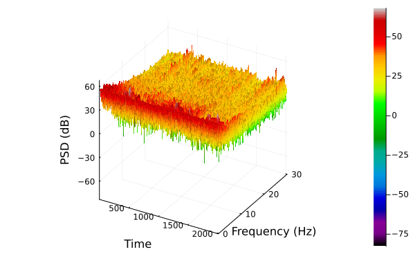
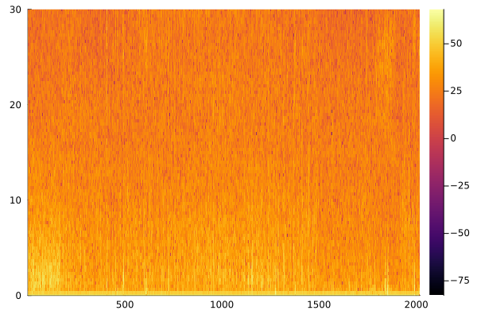

EEGToolkit.jl
Computational EEG analysis with emphasis in sleep neuroscience.
Developed at the Laboratory for the Study of Sleep Slow-wave activity
The Gods of the earth and sea
Sought thro' Nature to find this Tree,
But their search was all in vain:
There grows one in the Human Brain.— William Blake
This package has three aims:
- Simplicity
- Transparency
- Efficiency
Simplicity means that a person with little programming background should be able to use it, at least with the documentation at hand. Transparency means that any methodology implemented by the package should be accessible enough so as to be reported in a scientific paper. Efficiency means that large EEGs (e.g. sleep EEGs) should be processed and analyzed in minutes or less.
Transparency affects primarily power spectral analysis (PSA). Most packages don't report how PSA is done. Proprietary software is typically even more obscure. Combined with the fact that PSA is not standardized and may be computed in several many ways, this makes it very difficult to compare and rest results.
This package is free software—free as in freedom. You are free to use the code as you wish and for any purpose. You are free to study the code and change it to make it do what you wish. You are free to redistribute copies of this package to help others. You are free to distribute copies of any modified version of this package.
Proprietary software hinders the liberty of its users. In science, it obscures the scientific process and makes replication and collaboration difficult. If you are a scientist, use free software whenever possible.
Package Features
- Loading and processing EEG data
- EEG visualization
- Sleep stage handling
- NREM Period detection
- Power spectral analysis
- Spindle detection algorithms
Time series
EEGToolkit.TimeSeries — TypeA struct representing time series data.
Fields
x::Vector{<:AbstractFloat}: Time series data.fs::Integer: Sampling rate.epoch_length::Integer: Length in seconds understood to comprise an epoch (defaults to 30).
EEGToolkit.segment — Functionsegment(v::Vector{T}, L::Int; overlap::Union{Float64,Int}=0, symmetric=false) where {T}
Splits a vector v into segments of length L with an overlap overlap expressed as a fraction of L. The overlap defaults to 0 (no overlap). Returns a vector $v$ of vectors - i.e. Vector{Vector{T}} - with $\vec{v_i}$ the $i$th segment in the split.
The function always attempts to capture the whole vector, even if the final split is not of length L. For example,
> x = [1, 2, 3, 4, 5, 6, 7, 8, 9, 0]
> segment(x, 5)
2-element Vector{Vector{Float64}}:
[1, 2, 3, 4, 5]
[6, 7, 8, 9, 0]
> segment(x, 7)
2-element Vector{Vector{Float64}}:
[1, 2, 3, 4, 5, 6, 7]
[8, 9, 0]Set symmetric=true to ensure that, if this occurs, the last split is dropped.
> segment(x, 3; symmetric=true)
3-element Vector{Vector{Float64}}:
[1, 2, 3]
[4, 5, 6]
[7, 8, 9]If L is equal to the segment length, segment raises a warning and returns a vector with only the original vector. The return value ensures type-safety but the warning is raised because splitting a vector over its very length is potentially due to programming errors.
segment(ts::TimeSeries, L::Int, overlap::Union{Float64, Int})
Splits the vector ts.x of a TimeSeries ts into segments of length L with an overlap overlap expressed as a fraction of L.
EEGToolkit.epoch — Functionepoch(signal::TimeSeries, n::Integer)
Returns a vector [x₁, …, xₖ] with all values xᵢ corresponding to the nth epoch in the signal.
epoch(signal::TimeSeries, n::Integer, m::Integer)
Returns a vector [x₁, …, xₖ] with all indexes corresponding to epochs n, n+1, …, m of the EEG. The default sampling rate is used to compute the indexes.
EEGToolkit.gen_time_domain — Functiongen_time_domain(signal::TimeSeries, s::Union{AbstractFloat,Integer}, e::Union{AbstractFloat,Integer})
Given an TimeSeries, generates the time vector t₁, …, tₙ corresponding to the signal from time s to e in seconds.
EEG
EEGToolkit.EEG — TypeA struct representing EEG data with associated metadata.
Fields
signals::Dict{String, TimeSeries}: A dictionary mapping signal labels (strings) to arrays of floating-point values.staging::Vector{String}: A vector of stage labels corresponding to each epoch.id::String: An identifier for the EEG.
Constructors
EEG(file::String, epoch_length::Integer=30, staging::Vector{String}=[""], id::String=""): Constructs an EEG object from an EDF file (file) containing EEG data. The function reads the signals, computes the necessary metadata (fs, N, epoch_count), and initializes the EEG struct with the provided staging vector.
Example
staging_vector = CSV.read("path/to/stage_data/eeg_staging.csv") # A vector with a stage per each epoch in the EEG
eeg_data = EEG("path/to/edf_data/data.edf", 30, staging_vector)
# Alternatively, if no stage data exists, it is safe to do
eeg_data = EEG("path/to/edf_data/data.edf", 30) # Staging vector defaults to [] if not provided
# or simply
eeg_data = EEG("path/to/edf_data/data.edf") # Epoch length defaults to 30 if not provided.EEGToolkit.filter_by_stage — Functionfunction filter_by_stage(eeg::EEG, channel::String, stages::Vector)
Returns all portions of an EEG channel in a given stage of the staging vector.
EEGToolkit.artifact_reject — Functionartifact_reject(signal::TimeSeries, anom_matrix::Matrix)
An artifact or anomaly matrix $A^{n \times 2}$ is a matrix that marks the time-position of the $n$ artifacts in an EEG. Each row of $A$ is of the form $(e, s)$ with $e$ an epoch and $s$ a sub-epoch. This implies an artifact exists in the $s$th sub-epoch of the $e$th epoch.
This function takes a TimeSeries signal and an anomaly matrix $A$. It removes from the signal the epoch-subepoch pairs containing artifacts. In particular, this function returns a Vector{Vector{T}} with T<:AbstractFloat. Thus, if result holds the return value of this function, result[i] contains what is left from the ith epoch after removing its contaminated sub-epochs. It is possible that result[i] is empty.
NREM Period detection
NREM period definition
Following Feinberg & Floyed and Dijk, a NREM period is a sequence of epochs satisfying the following conditions:
- It starts with stages 2, 3 or 4.
- It contains at least 15 minutes of stages 2, 3 or 4 in total.
- It ends with 5 or more minutes of REM, or with 5 or more minutes of wakefulness.
Epochs in the sequence are allowed to contain occurrences of REM sleep or wakefulness in between, as long as the duration of this occurrences is less than 5 minutes. But the epochs corresponding to these occurrences will not be part of the NREM period. For example, in a stage sequence of the form
... - 10m of stage two - 1m of REM - 5m of stage three - 5m of REM - ...
the NREM period consists of the first 10 minutes of stage 2 and the 5 minutes of stage 3, ignoring the 1 minute of REM in-between them.
Importantly, the restriction that ending REM periods must last at least 5 minutes is not imposed when detecting the first and the last NREM period in a night of sleep.
NREM detection algorithm
Let $n$ be the number of epochs corresponding to $15$ minutes and $m$ the number of epochs corresponding to $5$ minutes. (In 30 second epochs, $n = 30, m = 10$).
The algorithm assumes that the staging field of an EEG has been set to a vector $\vec{s}$ that contains only the strings $1, \ldots, 6, ?$ (with $5$ marking REM, $6$ wakefulness, $?$ unknown/unstaged).
The algorithm works by mapping $\vec{s}$ to $\alpha = s_1 \ldots s_q$ a word over the language generated by $\Sigma = \{1, \ldots, 6, ?\}$.
Observe that the language $[(5+6)^*(2+3+4)^*]^*$ is partitioned into $U$ and $U’$, where $U$ is the set of words containing at least $n$ symbols $2, 3, 4$ where neither $5$ nor $6$ occur consecutively $m$ times. Then $\alpha$ can be decomposed into
\[\alpha = \psi_1 \phi_1 \psi_2 \phi_2 \ldots \psi_k \phi_k \psi_{k+1}\]
where $\phi_i = \varphi_i (5^m5^* + 6^m6^*)$ and $\varphi_i \in U$. Such a decomposition readily provides the number of NREM periods in the EEG (i.e. $k$). Furthermore, the epochs which comprise these periods are easily inferable from the decomposition.
EEGToolkit.nrem — Functionnrem(staging::Vector, n::Integer=30, m::Integer=10)
Finds the k underlying NREM periods in a staging vector. Returns a vector of vectors V s.t. the ith vector in V contains the epochs which comprise the ith NREM period. Thus, the length of V is k the number of NREM periods.
The staging field of the EEG must have been set to a vector containing only the symbols 1, …, 6, ? where 5 denotes REM, 6 denotes wakefulness, and ? denotes unscored/unstaged.
nrem(eeg::EEG, n::Integer=30, m::Integer=10)
Finds the k underlying NREM periods in the staging vector of an EEG.
Spindle detection
This package implements two spindle detection algorithms discussed in O'Reilly and Nielsen (2015). We give a brief overview of them here but refer to their original publications for further detail.
EEGToolkit.sigma_index — Functionfunction sigma_index(x::Vector{<:AbstractFloat}, fs::Integer)
The $\Sigma$-index algorithm (Huupponen et al., 2007) find spindles by detecting abnormally high amplitudes values among the spindle frequency band. Per each 1 second window of the EEG,
- the maximum amplitude in the spindle frequency, which we call $S_{max}$
- the average amplitude in the low alpha and theta frequencies, which we call
$\alpha_{mean}, \theta_{mean}$
- the maximum alpha amplitude $\alpha_{max}$
are all computed. The $\Sigma$-index is defined to be zero if $\alpha_max > S_{max}$, and otherwise
\[f(S_{max}, \alpha_{mean}, \phi_{mean}) = \frac{2S_{max}}{ \alpha_{mean} + \phi_{mean} } \]
Higher values are indicative of a higher spindle probability. The rejection threshold recommended in the original paper is $\lambda = 4.5$.
EEGToolkit.relative_spindle_power — Functionrelative_spindle_power(x::Vector{<:AbstractFloat}, fs::Integer)
The Relative Spindle Power (RSP) algorithm (Devuyst et al., 2011) also detects abnormal values along the spindle frequency band. For every 1 second window, the amplitude spectrum $S(t)$ is computed, and the RSP is defined as
\[RSP(t) = \frac{\int_{11}^{16} S(t, f) df}{\int_{0.5}^{40} S(t, f) df}\]
This definition is more intelligible than the that of the sigma index, insofar as it represents the ratio of the total power in the spindle band with respect to the total power in the $\delta$ to $\phi$ frequency range. It is evident by definition that $0 \leq RSP \leq 1$. Higher values are indicative of a higher spindle probability (it should be clear that $RSP$ is not a probability itself). The rejection threshold recommended in the original paper is $\lambda = 0.22$.
Power spectral analysis
EEGToolkit.AmplitudeSpectrum — TypeStructure for amplitude spectrum estimations. Estimations are by default one sided, with frequencies ranging from [0, fₛ/2].
The formula used is
\[\frac{2|H(f)|}{\sum_i w_i}\]
with $w_i$ a Hanning window.
Fields
freq::Vector{<:AbstractFloat}: Frequency range of the spectrumspectrum::Vector{<:AbstractFloat}: Estimated spectral amplitudeformula::String: A string representation of the formula used for the estimation.
Constructors
AmplitudeSpectrum(x::Vector{<:AbstractFloat}, sampling_rate::Integer, pad::Integer) : Computes a direct PSD over a signal x with a given sampling_rate.
EEGToolkit.PSD — TypeStructure for PSD estimations. Estimations are by default one sided, with frequencies ranging from [0, fₛ/2].
The default formula is
\[\frac{2|H(f)|^2}{f_s \sum_i w_i^2}\]
with $w_i$ a Hanning window. This means the estimation is normalized by the sampling rate by default. This can be changed by setting the normalization parameter equal to $\frac{1}{f_s}$, canceling out the factor in the denominator.
If Barlett or Welch's mehtod is used (i.e. if the second constructor is used), the formula becomes
\[\frac{1}{M \varphi} \sum_i^M \left[ \frac{2|H_i(f)|^2}{f_s \sum_i w_i^2} \right]\]
where $w_1, \ldots, w_n$ a Hanning window, $M$ the number of segments, $H_i(f)$ the FFT of the $i$th segment of the signal, and $\varphi$ an optional normalization factor defined by the normalization parameter (defaults to 2 * seg_length). Thus, with default keyword arguments, and averaging across $M$ windows with $k$ samples each, the estimation is
\[\frac{1}{M imes 2k} \sum_i^M \left[ \frac{2|H_i(f)|^2}{f_s \sum_i w_i^2} \right]\]
To avoid any normalization, simply let $arphi = 1$.
Fields
freq::Vector{<:AbstractFloat}: Frequency range of the spectrumspectrum::Vector{<:AbstractFloat}: Estimated spectral density in dB.method::String: Estimation method usedformula::String: A string representation of the formula used for the estimation.
Constructors
PSD(x::Vector, sampling_rate::Integer, pad::Integer = 0): Computes a direct PSD over a signalxwith a givensampling_rate.PSD(x::Vector, fs::Int, L::Int, overlap::Union{ <:AbstractFloat, Integer }, normalization::Union{ <:AbstractFloat, Integer } = 1): Splits the signalxinto segments of length L with anoverlapin [0, 1). The overlap is understood to be a fraction of the segment length. PSD is estimated within and averaged across all segments. Ifoverlapis zero, this results in Barlett's method. Ifoverlapis greater than zero, this results in Welch's method. Ifpadis zero no zero-padding is done. Ifpadis greater than zero, each segment is zero-padded to a length ofpad.PSD(ts::TimeSeries): Splits the signalxinto segments of length L with anoverlapin [0, 1). The overlap is understood to be a fraction of the segment length. PSD is estimated within and averaged across all segments. Ifoverlapis zero, this results in Barlett's method. Ifoverlapis greater than zero, this results in Welch's method. Ifpadis zero no zero-padding is done. Ifpadis greater than zero, each segment is zero-padded to a length ofpad.
EEGToolkit.plot_psd — Functionplot_psd(psd::PSD; freq_lim=30.0)
Plot a PSD with x-axis being frequency and y-axis being estimated power spectrum.
EEGToolkit.Spectrogram — TypeStructure for spectrogram estimation. Estimations are by default one-sided, with frequencies ranging from [0, fₛ/2]. The signal is split into possibly overlapping windows of length L; within each window, a PSD method is used to compute the PSD with overlapping windows.
The spectrogram is a matrix $S^{M \times F}$ where $M$ is the number of windows and $F$ is the length of the spectrum vector in any given window (i.e. the number of frequencies or the frequency resolution).
Let $f_1, f_2, \ldots, f_k$ be a strictly increasing sequence of frequencies. Assume these frequencies correspond to the column indexes $c_1, c2, \ldots, c_k$ of $S$. Then the mean power in the frequency range $[f_1, f_k]$ is
\[\frac{1}{M} \sum_{i=1}^{M}\left[\frac{1}{c_k - c_1}\sum_{j=c_1}^{c_k} S_{ij}\right] = \frac{1}{M\big(c_k - c_1\big)}\sum_{i=1}^{M}\sum_{j=c_1}^{c_k} S_{ij}\]
In this package, mean power in a frequency range is computed with the mean_band_power function.
Fields
time::Vector: Time domain (x)freq::Vector{<:AbstractFloat}: Frequency domain (y)spectrums::Matrix{<:AbstractFloat}: Power spectrum (z). Rows are time and columns are frequency.segment_length::Integer: Length of each segment in time.
Constructors
Spectrogram(signal::Vector{<:AbstractFloat}, fs::Integer, window_length::Integer, psd_function::Function; overlap::AbstractFloat = 0.5): Compute the spectrogram by splitting the signal into
potentially overlapping windows of length window_length. Within each window, a psd_function is used to compute the PSD. This function must return a PSD object. psd_overlap parameters. An optional normalization factor and a zero-padding length can be included, as in the PSD constructor.
function Spectrogram(segs::Vector{Vector}, fs::Integer, segment_length::Integer, psd_function::Function; overlap::AbstractFloat = 0.5): This constructor does not take a signal but a split or windowed signal. This is useful, for example, when the EEG is split into windows corresponding to a specific period (e.g. NREM epochs). In this case, each time-instance in the Spectrogram corresponds to one of the windows. Aside from this, there is no difference with the previous constructor.function Spectrogram(ts::TimeSeries, window_length::Integer, psd_function::Function; kargs...): Simpler constructor using aTimeSeriesobject.
EEGToolkit.plot_spectrogram — Functionplot_spectrogram(spec::Spectrogram, freq_lim::AbstractFloat=30.0, type::Int=1, color=:nipy_spectral)
Plots a spectogram spec either in 2d (type = 1) or 3d (type = 2). An optional frequency limit (freq_lim) may be set (defaults to 30Hz). The color palette color may be set; defaults to nipy_spectral.
EEGToolkit.freq_band — Functionfreq_band(spec::Union{PSD,AmplitudeSpectrum}, lower::AbstractFloat, upper::AbstractFloat)
Given a PSD, returns a Vector{AbstractFloat} with the powers within the frequency band [lower, upper].
freq_band(spec::Spectrogram, lower::AbstractFloat, upper::AbstractFloat, window::Integer)
Given a spectrogram, returns a Vector{<:AbstractFloat} with the powers within a frequency band [lower, upper] of a specific window (row of the spectrogram).
freq_band(spec::Spectrogram, lower::AbstractFloat, upper::AbstractFloat)
Given a spectrogram, returns a Matrix{<:AbstractFloat} with the powers within a frequency band [lower, upper] across all windows.
EEGToolkit.mean_band_power — Functionfreq_band(spec::Spectrogram, lower::AbstractFloat, upper::AbstractFloat, window::Integer)
Given a spectrogram, returns the mean power in a given frequency band [lower, upper]. This function effectively computes
\[\frac{1}{M\big(c_k - c_1\big)}\sum_{i=1}^{M}\sum_{j=c_1}^{c_k} S_{ij}\]
Helpers
EEGToolkit.next_power_of_two — Functionnext_power_of_two(n::Int)
Given an integer n, finds the least m = 2ᵏ s.t. m ≥ n.
EEGToolkit.zero_pad — Functionzero_pad(v::Vector{<:AbstractFloat}, desired_length::Integer) where {T}
Zero-pads a numeric vector v to a desired_length
Examples
NREM delta power
This is an example script for computing the mean $\delta$ (delta) power in each of the NREM periods of a sleep EEG. We will use the C3 channel.
# First, import the package
using EEGToolkit
# Assuming we have the stage data in a .csv and we have some function
# to read CSVs (e.g. from the CSV package)
staging = some_function_to_read_csv("my_staging_data.csv")
# We read an EEG that has channels C3-A2 and F3-A1. We assume the CSV had a
# column called STAGES with the stages of each epoch.
eeg = EEG(edf_file, staging.STAGES)
# We extract the TimeSeries object corresponding to C3-A2
signal = eeg.signals["C3-A2"]
# Detect the NREM periods
nrems = nrem(eeg)
# Split the C3 signal into 30-second windows (not-overlapping).
epochs = segment(signal, signal.fs * 30)
# PSD function to be used within each window in the spectrograms
psd = x -> PSD(x, signal.fs, signal.fs * 5)
mean_delta_powers = []
for nrem_period in nrems
# Extract the portion of the signal corresponding to this NREM period
# This is a vector of vectors [vector_1, ..., vector_k], with the ith
# vector being the ith epoch in this NREM period.
nrem_epochs = epochs[nrem_period]
# Simply to make things conceptually simpler, we convert the NREM period into a TimeSeries
nrem_signal = TimeSeries(vcat(nrem_epochs...), signal.fs, 30)
# Compute spectrogram with 30sec windows using `psd` on each window.
spec = Spectrogram(nrem_signal, nrem_signal.fs*30, psd)
# Compute mean power in delta band (0.5 to 3.9 Hz) from the spectrogram.
δ = mean_band_power(spec, 0.5, 3.9)
# Store the result in the mean_delta_powers list.
push!(mean_delta_powers, δ)
end
# Now the ith element in `mean_delta_powers` is the mean delta power
# of the ith NREM period.Power spectrum examples
S = Spectrogram(signal, eeg.fs, 3, 0.5) # Compute spectrogram with 3 second segments and 0.5 segment overlap.
p = plot_spectrogram(S, 30.0, 2) # Plot the spectrogram with limit frequency 30.0; type 2 plot = surface plot.
Alternatively,
p = plot_spectrogram(S, 30.0, 1, :inferno) # Color scheme inferno is better for heatmap